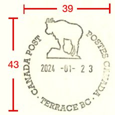

Terrace STN Main pictorial cancel
Goat
- Status
- Active
- Run dates
- ? to present
- Design
- goat
- Ink colour
- Black
- Designer
- Unknown
- Post office
- Terrace STN Main
3232 Emerson St
Terrace, BC
V8G 0A0 - Subjects
- animal, mammal, goat
Collect it by mail. Send your stamped covers, with a stamped return envelope, to the post office address above. How to collect pictorial cancels by mail · en français
 Houston POThe World's Largest Fly Rod
Houston POThe World's Largest Fly Rod Prince George STN AThe Royal Infant / La poupon royal
Prince George STN AThe Royal Infant / La poupon royal Fort Nelson PONORTHERN ROCKIES REGIONAL DISTRICT
Fort Nelson PONORTHERN ROCKIES REGIONAL DISTRICT